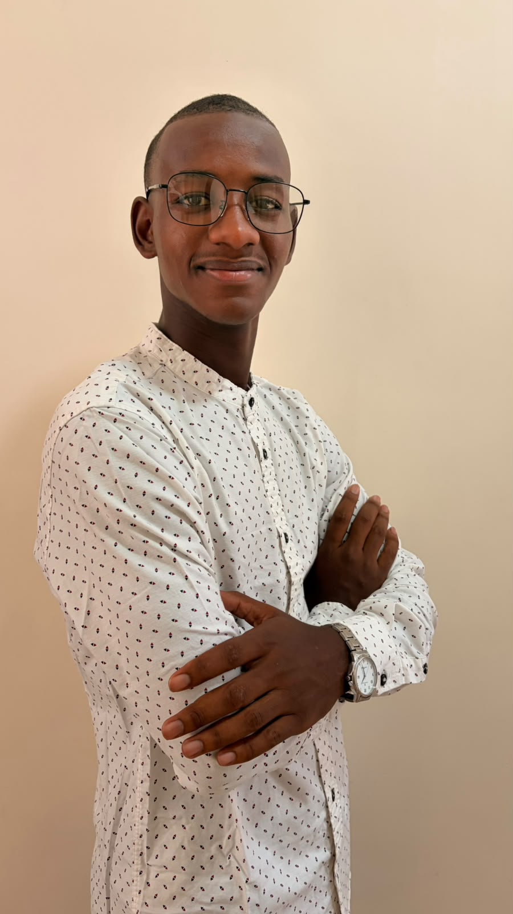

Classification d'images — Fashion-MNIST
Réseaux de neurones implémentés from scratch (NumPy) et avec TensorFlow/Keras, étude comparative.
✔ Accuracy : 88%
En savoir plus →
Étudiant en Licence 3 Informatique à l'Université Amadou Mahtar Mbow (UAM, Sénégal), après deux années en Mathématiques, Physique et Informatique (MPI) qui m'ont donné une base solide en mathématiques — un atout pour comprendre les algorithmes de Machine Learning. Mon objectif : intégrer un Master en IA / Data Science.

Analyse, nettoyage, visualisation et préparation des données avec Pandas, NumPy, Matplotlib et Seaborn.
Classification, régression, validation croisée et évaluation de modèles avec Scikit-learn.
Réseaux de neurones implémentés from scratch (NumPy) et avec TensorFlow/Keras.
Java, JavaFX, MySQL, Linux Ubuntu Server, Docker, OpenSSH et virtualisation.
Réseaux de neurones implémentés from scratch (NumPy) et avec TensorFlow/Keras, étude comparative.
Pipeline complet ML : nettoyage, encodage, 5 modèles entraînés, optimisation GridSearchCV.
Analyse de données étudiantes, modélisation et audit critique (détection d'un biais de Data Leakage).
En savoir plus →